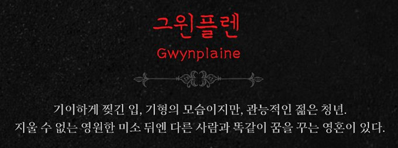

그윈플렌
: 박효신 , 박은태, 박강현
우르수스
민영기,
양준모
넘버
- 프롤로그. 플리머스 항구, 폭풍 속, 눈보라, 푸른 마차(Green box) 외부
- 오프닝-태풍 (OPENING-THE TEMPEST) : 오케스트라, 합창
- 기도 (THE PRAYER) : 컨퀘스트 박사, 콤프라치코스
- 고요한 죽음 (A GENTLE DEATH) : 앙상블
- 자장가 (LULLABY) : 어린 그윈플렌, 앙상블
- SCENE 1. 푸른 마차 내부
- 세상은 잔인한 곳 (IT’S A CRUEL WORLD) : 우르수스 정성화 버전
- SCENE 2. 레이디 조시아나의 가든 파티 – 15년 후
- 가든 파티 (THE GARDEN PARTY) : 조시아나, 데이빗 경, 페드로, 앤 여왕, 앙상블
- 여왕의 명으로 (HER MAJESTY PROCLAIMS) : 앤 여왕, 하인들
- 가든 파티 파트 2 (GARDEN PARTY PART 2) : 조시아나, 데이빗 경, 페드로 #
- SCENE 3. 태드캐스터 여관 & 카니발
- 일단 와 (STEP RIGHT UP) : 우르수스, 데이빗 경, 비너스, 피비, 니클레스, 카니발 사람들 #
- SCENE 4. 태드캐스터 여관의 무대
- 대혼란을 무찌르다 (CHAOS VANQUISHED) : 오케스트라
- 나무 위의 천사[7] (ANGELS IN THE TREE) : 그윈플렌, 데아 박강현, 민경아 버전
- 모험 멜로드라마 (ADVENTURE MELODRAMA) : 오케스트라
- 나무 위의 천사 리프라이즈 (ANGELS IN THE TREE REPRISE) : 그윈플렌, 데아
- 묘한 기분 (WHAT IS THIS FEELING?) : 조시아나
- SCENE 5. 태드캐스터 여관의 백스테이지
- 궁전 (AT THE PALACE) : 그윈플렌, 데아, 우르수스, 비너스, 피비, 합창 박강현, 이수빈, 민영기 버전
- 서신 (THE LETTER) : 조시아나
- 궁전 플레이오프 (AT THE PALACE PLAYOFF) : 데아, 비너스, 피비
- SCENE 6. 은밀한 장소
- 나와 닮은 사람 (I SEE MYSELF IN YOU) : 그윈플렌, 조시아나
- 내안의 괴물 (THE MONSTER IN ME)) : 조시아나
- SCENE 7. 태드캐스터 여관 근처
- 그럴까? (CAN IT BE?) : 그윈플렌 박강현 버전
- 어딨어? (WHERE ARE YOU?) : 데아
- 데이빗 경의 유혹 (LORD DAVID’S SEDUCTION) : 데이빗 경
- 행복할 권리 (THE RIGHT TO BE HAPPY) : 그윈플렌, 우르수스
- SCENE 8. 템즈강 주변, 푸른 마차
- 눈물은 강물에 (DROWN YOUR TEARS) : 데아, 비너스, 피비, 여인들
- 넌 내 삶의 전부 (YOU ARE MY EVERYTHING) : 그윈플렌, 데아
- SCENE 9. 눈물의 성으로 가는 길 (서더크 감옥)
- <눈물의 성 (THE HOUSE OF TEARS) : 니클레스, 앙상블
- SCENE 10. 서더크 감옥 – 고문실
- 말도 안 돼 (IT IS NOT TRUE!) : 그윈플렌, 페드로, 콤프라치코스, 앙상블
- 기도 리프라이즈 (THE PRAYER REPRISE) : 콤프라치코스
- 1막 피날레 (FINALE ACT ONE) : 그윈플렌, 페드로, 앙상블